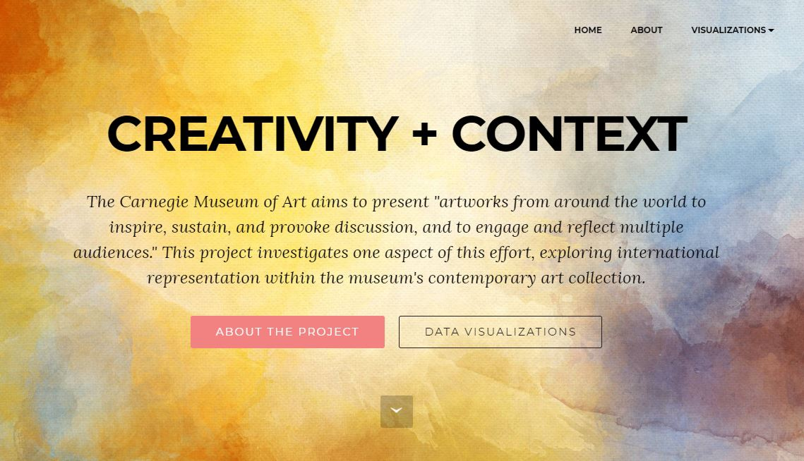
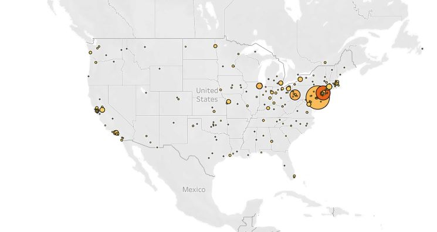
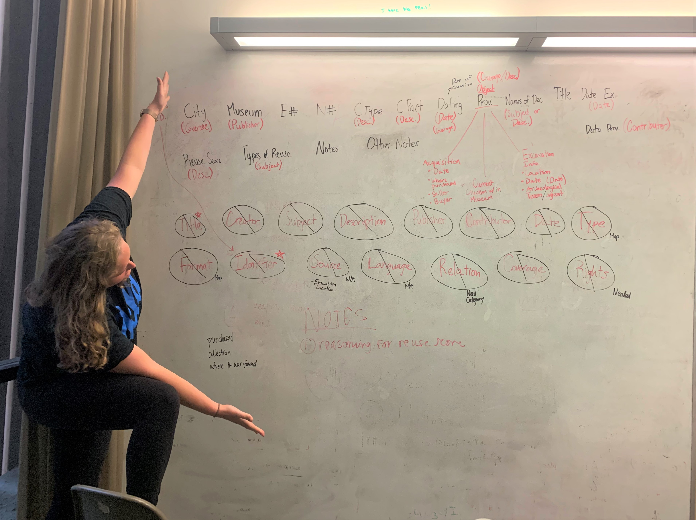

My academic studies at UCLA focused on metadata and information architecture, with the ultimate goal of learning how to leverage these concepts in information and collections management. As such, I sought courses that would build my understanding of foundational and theoretical concepts as well as courses that would build my technical skills.
This page features a list of classes I have taken during my time at UCLA, as well as examples of my coursework, including my major paper, elective coursework, core coursework.
Artifacts and Cultures // IS 211
Johanna Drucker
Description and Access // IS 260
Gregory Leazer
Archives, Records, and Memory // IS 431
Anne Gilliland
Data Management and Practice // IS 262A
Jillian Wallis
Systems and Infrastructures // IS 270
Jean-Francois Blanchette
Human-Computer Interaction // IS 272
Leah Lievrouw
Data Curation and Policy // IS 262B
Jillian Wallis
Metadata // IS 464
Jonathan Furner
Values and Communities // IS 212
Sarah Roberts
Content Management Systems // IS 289
Gregg Rugolo
Digital Humanities // DH 201
Miriam Posner
Computer Systems and Programming // IS 271
Joshua Gomez
Internship, Getty Research Institute // IS 498
Jean-Francois Blanchette, Melissa Gill
History of Books and Literacy Technologies // IS 202
Johanna Drucker
Historical Research Methods // IS 281
Shawn VanCour
Descriptive Cataloging // IS 461
Luiz Mendes
Digital Asset Management // IS 289
Linda Tadic
User Experience Research // IS 279
Mary Zide
Subject Cataloging // IS 462
Luiz Mendes
Internship, Getty Research Institute // IS 498
Jean-Francois Blanchette, Patrica Harpring
Metadata // IS 464
Jonathan Furner
Spring 2019
Abstract
The Fowler Museum is a global arts and cultures museum, specializing in art from Africa, Asia, Indigenous North and South Americas, and the Pacific. Their collections span over two millennia, and include over 120,000 art and ethnographic objects as well as 600,000 archaeological objects, 20,000 textiles, and 400 silver works. The diversity and extent of their holdings could attract a lot of users from across the globe, given the holdings’ origins. Despite this, the Fowler’s digital collections are quite minimal, comprising of just 2,007 objects and lacking encoded, consistent, and robust metadata. A more strategic approach to metadata could enable the Fowler to better serve its users and the community at large—particularly in the domains of research and repatriation. This comprehensive metadata strategy addresses both of these use cases, offering recommendations on metadata schemata, vocabularies, rights metadata, and logistics to best optimize the digital collections’ metadata.
Inclusion in portfolio
I am deeply interested in metadata and its relation to access. This paper allowed me to think critically about these issues, grounding my analysis in an institution and two use cases. Because of this framework, I was able to offer concrete recommendations for a path forward. This is the sort of work that I hope to do with my MLIS degree, making it an fitting major paper.


Digital Humanities // DH 201
Miriam Posner
Fall 2019
Abstract
The Carnegie Museum of Art (CMOA) is a contemporary art museum in Pittsburgh, Pennsylvania. CMOA asserts that their programming, exhibits, and publications “frequently explore the role of art and artists in confronting key social issues of our time, combining and juxtaposing local and global perspectives.” Their mission statement champions creativity with a global focus, stating that “CMOA collects, preserves, and presents artworks from around the world to inspire, sustain, and provoke discussion, and to engage and reflect multiple audiences.”
This project takes its lead from CMOA's mission statement, examining their accession records to get a sense of how global their collection is. CMOA recorded the nationality of artists within each artwork’s accession record, and was fairly thorough in this effort. While there is no silver bullet for determining the diversity of a museum’s collection, the data visualizations in this project will tease apart aspects of CMOA’s contemporary art collection to get a better understanding of the nationalities and countries represented in their artworks.
Inclusion in portfolio
This project required strong data cleaning and visualization skills, and developed my expertise in OpenRefine, Tableau, and web design. Further, a recurrent theme of the course was debunking the myth of "raw data." Data need to be collected, cleaned, and curated, all of which involve human intervention. A large part of this project was thus documenting decisions I made when working with data in order to allow people to critically engage with and analyze my work. I included this project in my portfolio as it reflects my ability to work with data in a transparent, ethical manner, and also illustrates my technical skills with data work.

Classmate Marisa Purcell showcases the metadata crosswalk we created for Dr. Cooney. Dr. Cooney's data followed a homegrown schema; this crosswalk to Dublin Core would make her research data more interoperable and reusable.
Data Curation and Policy // IS 262B
Jillian Wallis
Spring 2019
Abstract
A critical component of research is data management. Responsible data management benefits research on numerous fronts—it promotes trust in the data and transparency for the user; it facilitates data reuse; and it provides standards and context that support the longevity of a project, which can be important if the research project is a years-long endeavor with a multitude of changing contributors. Data management, however, can be complicated in interdisciplinary research projects, as different disciplines have different data standards and practices. This is where the expertise of those in the information studies field comes in. Professionals with a background in information studies are specifically trained to think about preservation, trust, and access of information.
We collaborated with Dr. Kara Cooney, a professor in the Department of Near Eastern Languages & Cultures. Her research explores coffin reuse in Ancient Egypt. This work is an expansive endeavor, involving eight years of data collection. All in all, Dr. Cooney has examined over 300 coffins in over 20 museums and private collections around the world, generating over 100,000 photographs as well as qualitative data on each coffin, totalling one terabyte of data.
Dr. Cooney’s work is interdisciplinary, drawing on art history, archaeology, and Egyptology. Her data also has rights’ concerns, as museums have different permission controls with regard to disseminating the photographs of coffins. With regard to data transparency and trust, appropriate measures are needed as her data is qualitative, consisting of Dr. Cooney’s observations and determinations regarding signs of coffin reuse. And finally, Dr. Cooney works with graduate students who were not necessarily there since the beginning of her research, which can affect the longevity of her data.
We created a data management plan that supports these concerns, and offers a path forward for sharing her findings online in order to facilitate data reuse. Our recommendations cover a number of areas that promote data transparency, reuse, and longevity, including description, rights, storage, repositories, citation, budgets, and timelines.
Inclusion in portfolio
I included this report in my portfolio because it shows a deep understanding of data lifecycles, metadata, transparency, trust, and preservation—all of which are crtical concepts that will further my professional life. Further, this project spanned two terms; in winter 2019 I took the 262A course, in which we created the data management plan, and in spring 2019 I took the 262B course, in which we implemented the data management plan. Accordingly, I was able to go more in depth with the report and with the client, Dr. Cooney, to deliver the most useful recommendations possible.
Systems and Infrastructures // IS 270
Jean-Francois Blanchette
Winter 2019
Abstract
The internet has undeniably shaped the nature of contemporary research and information seeking, as more and more people turn to Google as their first line of inquiry, for better or for worse. Digital collections management systems provide a way to bring special collections online, facilitating increased access and scholarship. Addressed to a potential "client," the UCLA Library, this policy brief provides an assessment of digital collections management systems, complete with a description of the technology, current issues it is facing, and future trends.
Inclusion in portfolio
This is an important addition to my portfolio of work in terms of both content and style. With regard to content, digital collections management systems are relevant to my current work at the Digital Library Program, and could very much be a part of my future employment. It was deeply beneficial for me to investigate the software on a number of fronts, from architecture and interoperability to standards and markets. With regard to style, this assignment required synthesis and precision, as it distilled 6,000 words of writing completed over the course of six weeks into 2,000 words. This writing style felt distinct from much of the academic writing completed during my time in the program, and especially relevant for my professional development.